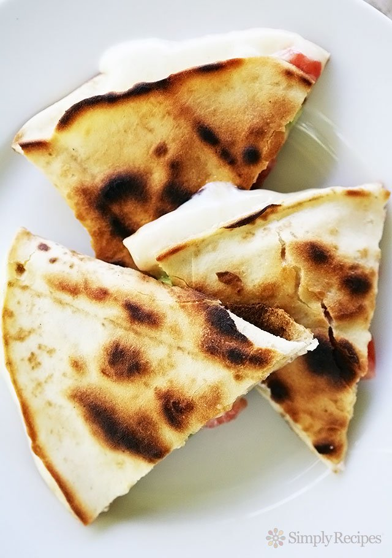

ingredients
- 1 tblsp sunflower oil
- 1 onion finely chopped
- 2 tsps smoked paprika
- 1 tsp mexican chilli powder
- 2 tsps ground cumin
- 1 red capsicum finely chopped
- 2 galic cloves crushed
- 500g chicken mince on chopped ckicke breast
- 1 tblsp tomato paste
- 400g can diced tomatoes
- 250ml water
- 400gdrained kidney beans or canollini beans
- 1 carrot peeled and grated
- salt and pepper to taste
- 12 flour tortillas
- olive oil spray
- 240g grated cheddar chese
- guacamoli,to serve
- soured cream to serve
- salsa to serve.
method
1. Heat oil in a large nnon-stick frying pan over a medium to high heat. Add the onion, spices, capsicum and garlic. cook, stiring, for about 2 minutes or until the onion is soft. add the chicken mince. cook, stiring, for about 5 to 6 minutes or longer if you think it is needed.
2. Add tomato paste, tomatoes water, beans and carrot. bring to a boil. Simmer, uncovered, for 6 to 7 minutes, or untilthe mixture thickens. Season with salt and pepper.
3.Spray both sides of tortillas with oil spray. Place on pan andfll half of the tortillas with the mixture. Then fold other side over to create a tight seal cook until crisp. then serve on a plate with soured cream, guacamoli and salsa.
YUM YUM !!!!!!